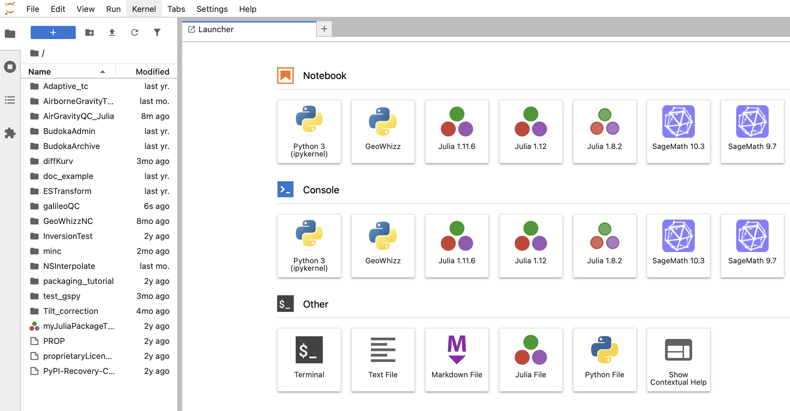
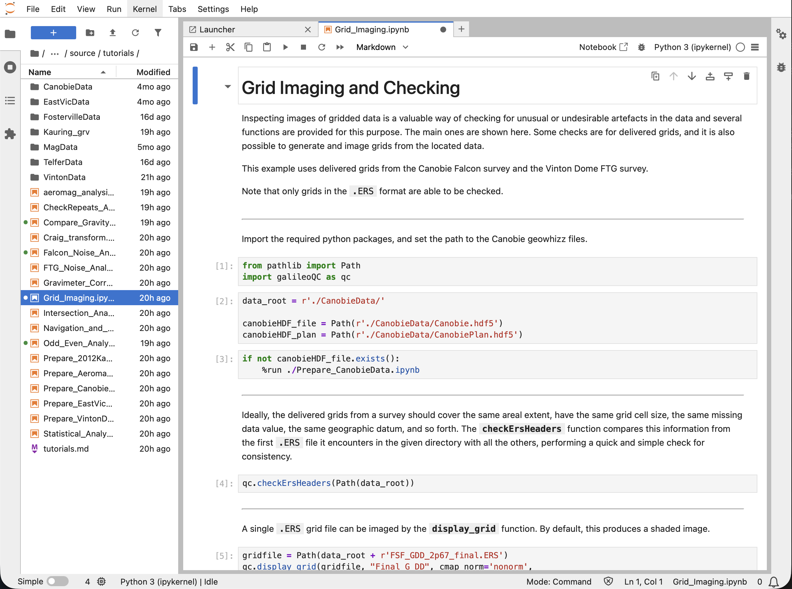

Install Details¶
This document describes the steps for installing galileoQC in a variety of operating systems. The steps include those for installing python and setting up the environment.
There are many ways to accomplish these steps. Here one way is documented, together with a little explanation. Feel free to use a different way if you have the expertise (or at least can find the knowledge on the web).
These instructions use the python venv environment manager and pip installer.
It is important to have a single virtual environment set up, with galileoQC and jupyterlab installed in that environment. Throughout this installation guide, the environment used for galileoQC is named whizz. If you use a different name, just replace whizz with that name.
For each operating system, the steps are:
create a python virtual environment;
install galileoQC;
install jupyterlab.
For Windows installations, you may need to install python first. This can be done in several ways; the winget method is given here.
Windows 10 and Windows 11 pip install¶
Go into Settings -> Apps -> Advanced app settings -> App execution aliases, and turn off the App Installers for python.exe and python3.exe.
The following commands must all be entered from the cmd window (not the Powershell).
Firstly install Python (the example is version 3.13 but the latest version is recommended), then create a virtual environment whizz, and then activate the virtual environment.
> winget install Python.Python.3.13
> python -m venv whizz
> whizz\Scripts\activate
The prompt shows that you are in the whizz environment, ready to install galileoQC. Now use pip to install it.
(whizz) > pip install galileoQC
And then install jupyterlab.
(whizz) > pip install jupyterlab
Now everything is installed and you should be able to run galileoQC. To see how this is done, browse some of the tutorials in the documentation.
You can also download some of the tutorial notebooks from the github repository to your working directory, and then modify them for your own use.
Start jupyterlab in order to run galileoQC.
(whizz) > jupyter lab
The Jupyterlab web app should open in your browser.
Linux pip install (macos, fedora, debian and ubuntu)¶
First, you will need a working version of python3, as well as the pip installer and the venv virtual environment manager. These should be readily available on any linux system. If not, a search on the web will provide instructions for installing them (some brief notes are included further below). The installations are different for different operating systems. On macos, this needs some care because there is usually an older version of python already installed but the python install instructions will help you here.
Next, create an environment called whizz within which galileoQC will be installed and run.
Open a terminal window and enter the following commands.
Create the whizz environment and activate it.
$ python3 -m venv whizz
$ source whizz/bin/activate
The prompt shows that you are in the whizz environment, ready to install . Now use pip to install it.
(whizz) $ pip install galileoQC
Now you need jupyterlab to run galileoQC. This is easily installed:
(whizz) $ pip install jupyterlab
Now everything is installed and you should be able to run galileoQC. To see how this is done, browse some of the tutorials in the documentation.
You can also download some of the tutorial notebooks from the github repository to your working directory, and then modify them for your own use.
Start jupyterlab in order to run galileoQC.
(whizz) $ jupyter lab
The Jupyterlab web app should open in your browser.
Preparing linux¶
The following commands might be useful in preparing your system for the galileoQC and jupyterlab installations.
DEBIAN
$ sudo apt update && sudo apt upgrade
$ sudo apt install python3.11-venv
UBUNTU
$ sudo apt update && sudo apt upgrade
$ sudo apt install python3.10-venv
FEDORA
venv is installed with python3.
$ sudo dnf upgrade
Running galileoQC¶
The Jupyterlab web app should look something like this screenshot:
{kind=link}

Fig. 1 Start page for galileoQC in jupyterlab.¶
Navigate to your working folder and run one or more of the .ipynb files there, or start a new notebook from the File menu. Here is the Odd - Even Analysis notebook from the tutorials.
{kind=link}

Fig. 2 Running the galileoQC Odd - Even Analysis tutorial.¶
Specific versions of galileoQC¶
You can explicitly provide the version number at installation with pip:
(whizz) > pip install galileoQC==1.0.0
Then follow the steps above to download the current version and install it.
Uninstalls¶
Remove galileoQC and the whole environment¶
If you have a problem with the installation and want to get rid of everything and start again (or if you just want to remove galileoQC completely), you can remove the whizz environment. (This is not advisable if you have installed other packages in the environment that you want to use).
To remove only galileoQC is eaily done in any of our tested operating systems. Navigate to the working directory with whizz activated and use pip.
(whizz) > pip uninstall galileoQC
If you want to uninstall the whizz environment and all of its contents:
Windows
(whizz) > deactivate
> rmdir /s /q whizz
linux and macos
(whizz) $ deactivate
(base) $ sudo rm -rf whizz
You may be asked to confirm the remove. Accept.
This removes galileoQC, jupyterlab, and all other packages in the whizz environment. To recover, you will need to create a new environment, and install galileoQC and jupyterlab in the environment, following the installation steps.